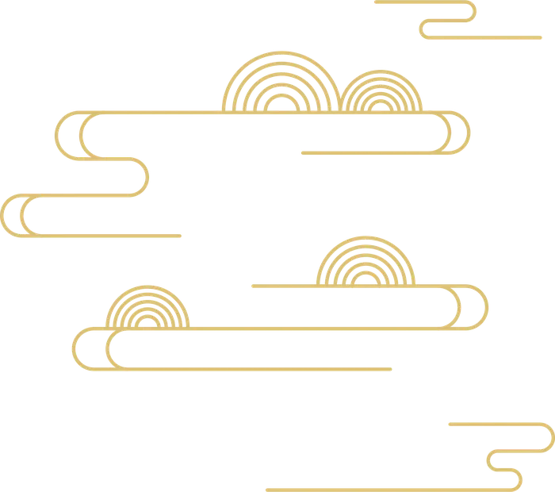
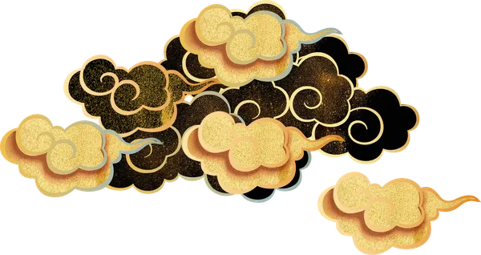
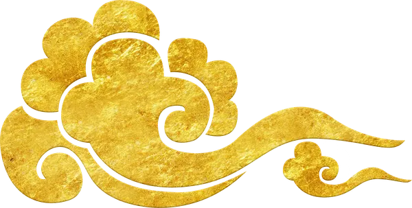

壹
如何入宮
入 宮填寫申請書
還沒入宮的小燐蝶，先填好入宮申請書。
跟主播說一聲
直播中途填完的，請在聊天室告訴花燐「我填好了」，不然花燐不會知道哦～
選孩子立繪
在直播間告訴花燐你要的孩子立繪編號，例如「皇子庫 12 號」。
孩子立繪庫

貳
升妃位規則
晉 位更衣
從八品
剛入宮的妃子都從這裡開始
采女
正八品
有「小燐蝶」會員的，一入宮就是采女
| 每次來直播間打招呼報到 | +1 級 |
| 懷孕 | +2 級 |
| 孩子平安生下來 | +2 級 |
| 宴會拔得頭籌 | +1 級 |
升不上去的時候：改成送 5 個禮物（增加寵愛），寵愛夠了才能再升妃位。
參
宴會與約會
宴 飲花朝宴
必須人在直播間才會納入評選。獲獎的妃子升 1 級妃位。
七夕約會
必須人在直播間，用轉盤決定約會人選。被選中的妃子升 1 級妃位。
肆
懲處與冷宮
刑 罰暗害其他妃子被抓到的話⋯
受害者還活著
懲罰方式由被暗害的妃子決定，但不可以賜死。
受害者死了
受害者可以選擇：賜死加害者，或把她打入冷宮。
進了冷宮之後
- 有其他妃子求情，就有機會離開冷宮；出來以後從更衣重新開始。
- 加害者的孩子交給其他妃子照顧。沒有成功離開冷宮的話，孩子就歸那位妃子。
- 也可以選擇放棄妃子身分：流放，或去花街當青樓女子。
死亡的妃子
可以再填一次入宮申請書重新入宮。身世背景會多一條：是哪一位妃子的轉世，以及前世是怎麼死的。
伍
養娃攻略
皇 嗣目標：太子與長公主
- 孩子的名字可以自己取。
- 綜合評價最高的皇子當太子、公主當長公主。
- 綜合評價看兩樣：寵愛和孩子的基本數值。
- 寵愛跟母妃受不受寵有關，送孩子禮物可以提升寵愛。
- 基本數值可以餵丹藥提升（見下方丹藥）。

陸
金手指
恩 典贈送會籍就能開啟。數字是要贈送的會籍數量。
柒
丹藥與毒藥
藥 房低階丹藥 3 個會籍・也可以給自己的寶寶用
- 保胎丸
- 這次懷孕不會難產
- 駐顏膏
- 絕色容貌 +20
- 健體丸
- 武藝 +20
- 益智丸
- 智謀 +20
- 小還丹
- 健康 +10
高階丹藥 5 個會籍・也可以給自己的寶寶用
- 孕子丹
- 服用後臨幸必定懷孕
- 龍鳳丹
- 懷孕的妃子必定生下龍鳳胎
- 多子丹
- 懷孕的妃子必定生下多胞胎
- 花容膏
- 容貌 +100
- 龍虎湯
- 武藝 +100
- 慧心湯
- 智謀 +100
- 清心丹
- 黑化值 −100
- 毀心丹
- 黑化值 +100
- 禍心散
- 野心 +100
- 移性丹
- 更改角色性格
- 大還丹
- 健康回滿
低階毒藥 7 個會籍・也可以給別人的寶寶用
- 寒霜毒
- 健康 −20（30%）
- 芳燼丸
- 容貌 −50
- 消智丹
- 智謀 −100
- 散功丹
- 武藝 −100
- 損藝丹
- 才藝 −100
高階毒藥 14 個會籍・也可以給別人的寶寶用
- 鶴頂紅
- 健康 −50（30%）
- 鴆毒
- 健康清空（30%）
- 芳燼湯
- 容貌 −500
- 紅花湯
- 流產（孕值歸 0）
- 絕子湯
- 絕子（孕值永遠是 0）